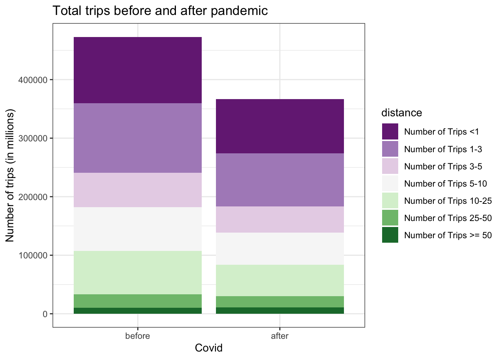

Chapter 5 Results
March 13 — Trump Declares COVID-19 a National Emergency
President Donald Trump declares the novel coronavirus a national emergency, which unlocks billions of dollars in federal funding to fight the disease’s spread.
5.1 Time series: Number of daily trips people make nationally.
The number of trips that people make on daily basis can be a useful metric to measure people’s mobility level. Among the trips for individual’s daily basis, the commute between home and working place usually takes a huge part of the statistics. Due to the publication of quarantine rules and working from home policy, the commute need largely decreases and people are encouraged to stay at home unless it is essential. Hence, the number of trips on a daily basis is expected to decrease. To investigate how people’s mobility level really behaves and varies, we present the graph for people’s trip numbers from national level from April 2019 to March 2020, which includes data from a year before the Covid-19 outbreak and a year after the pandemic.

Above time series plot contains how many daily trips are made nationally, weekly averaged number of trips(blue curve), as well as a smoothed daily trip number to better demonstrate the trend within the time series. From the plot, the number of trips in the vertical axis are presented in million unit to have a better scale. The yellow highlighted rectangular part represented the COVID-19 outbreak in the US after March 06, 2020. From the graph, we can clearly find that the number of trips largely decreased after the pandemic and has a huge drop right after president Trump declare the national emergency, which shows the same trend as expected. From the smoothed daily trip(pink) curve, there is upward trend regarding the number of trips people made nationally since December 2020. In December 2020, the United States begins its public vaccinations, which could be one of the reasons of the increasing trend in trip numbers since people are more tend to make trips after getting vaccinated. Also, the establishment of the vaccine station also requires daily commute trips to doctors and health-workers. Up to March 2020, the number of trips nationally, although has increased a lot comparing with the numbers in the late 2020, however, still lower than the common level before the COVID-19 outbreak.
5.2 Histogram: trip length distribution before and after COVID-19
After having an overall impression on how the total trips number changes, we want to have a close look at how trip numbers with different distance length changes due to COVID-19. Hence, we present following stack histogram in which the height of each stack shows the numbers of trips for different distance category. The distance category is the original data set are: trips below 1 mile, between 1-3 miles, 3-5 miles, 5-10 miles, 10-25 miles, 25-50 miles, 50-100 miles, 100-250 miles, 250-500 miles and above 500 miles. Since the trips with distance longer than 50 miles takes a relatively small percentage comparing with other distance categories, to make it more clear on the histogram and avoid having too much catrgories that can not provide much information, we deicide to combine the number of trips that are above 50 miles to one category called Number of Trips >= 50 and then create the histogram based on the new categories. The total height of the bars represent the total number of trips and the vertical axis is scaled to millions in unit. In the plot, each distance category has a unique color to better show the percentage distribution within the total number of trips before and after the pandemic. The time range for splitting the pandemic is 2020-03-13.

The height of the bars decreased from before to after, which shows that the total number of trips decreased after the pandemic. As for the distributions for each distance categories, since the number of trips of each categories decreases and the whole trip number decreases as well, it is not very obvious to see how the percentage of each categories changes. However, we can still find that for the trips above 50 miles, the percentage seems to increase and for trips between 1-3 miles, the percentage decreases. Before examining the data, we are intuitively expecting that long-trip distance is decreased since people can not travel between cities. To have a more rigorous conclusion on how the percentage of each distance categories changes, we provide numerical calculations below.
## # A tibble: 7 x 2
## distance perc_change
## <fct> <dbl>
## 1 Number of Trips <1 0.0141
## 2 Number of Trips 1-3 -0.00435
## 3 Number of Trips 3-5 -0.00330
## 4 Number of Trips 5-10 -0.00739
## 5 Number of Trips 10-25 -0.0106
## 6 Number of Trips 25-50 0.00273
## 7 Number of Trips >= 50 0.00882The perc_change column is calculated by using the percentage before the pandemic minus the percentage after the pandemic. Hence the negative value indicates the percentage decreases and a positive value indicate that the percentage increases. The calculation first proved our observation that the percentage of trips longer than 50 miles increases and the percentage of trips between 1-3 miles decreases. Furthermore, the calculation shows that actually the percentage for middle distance trips (i.e. trips from 1-25 miles) decreased, but for short and long distance trips (i.e. below 1 mile or above 25 miles) increased.
Combining with some real-world experience, one of the reasons for the decreasing in middle distance trips is that the middle trip distances includes daily commutes from home to office and some entertain activities like going to shopping malls or movie theaters. During pandemic, such activities is no longer available due to certain regulations hence the opportunities for people making middle-distance trips decreases. Short distance trips include the situation where people drive to the supermarket to buy groceries and this kind of need increases since people stay at home all day and need to buy fresh groceries more frequently The extreme long distance trips contains the scenarios where people drive to their family members’ house, or go back to hometown. This need also increases since more people decided to go back home from big cities.
Therefore, the changes in the percentages are reasonable and explainable after second thoughts and is a very interesting finding that we are not expecting from the beginning.
5.3 Multiple Cleveland dot plot: number of trips before and after pandemic in state level
After having an idea about how the number of trips changes in the national level, we would like to go into the state level to see how the averaged number of trips change before and after the pandemic for each state. We select the averaged trip number from 2019-04-01 to 2020-03-13 as the averaged trip number before pandemic and take the averaged number from 2020-03-13 to 2021-03-20 as the one after the pandemic. As a result, we present the multiple Cleveland dot plot, where the averaged daily number of trips change before and after the pandemic for each state is displayed and the order of the state is sorted according to the number of averaged trip numbers before the pandemic.

Some observations can be made based on the above graph. The first and foremost one is that for all states, the averaged number of trips after the pandemic is less than the value before. It means that people’s mobility level decreased regardless of the state. The plot also shows that the states with top five trip numbers before pandemic are CA, TX, NY, FL, IL, which are also top five states with most trips after pandemic.
5.4 Scatterplot: Overview of Transportation and CovID-19
In order to take a close look at relationship between transportation and pandemic, we draw a scatterplot of daily number of trips and confirmed cases in a national wide range (2020-01-23 ~ 2021-02-01). By first drawing a boxplot of confirmed cases (omitted here), we only keep the interquantile range. We could read information that when there are more confirmed cases, fewer people will travel out, which conforms to our common sense. However, the tendency is not that obvious. From the scatterplot, it seems that people’s willingness to travelling is not largely affected by epidemic situation.
5.5 Map: Percent of people staying at home during COVID-19 pandemic.
After reviewing trip numbers and COVID-19 confirmed cases at the nation level, our study drills down to the state level by showing state level home quarantine statistics on a map. The map of US states represents the average percentage of people who stayed at home after the outbreak (March 13, 2019) of the pandemic. The monochromatic color scheme was chosen to represent percentage values, with darker color representing higher percentage. This chart provides a clear view of contrast to both adjacent states and states that are farther apart, providing rich information to help compare home quarantine rates, therefore creating a holistic view of our analysis.
To a closer look at the chart, NY, CA and AK are among the states with highest percentage of people staying at home. From our previous analysis, NY and CA are among the top 5 states with the most averaged number of trips after the pandemic. Even though these two results may seems like a conflict at first glance, however, it may because that the number of trips is also correlated with the number of populations in the state. NY and CA have relatively higher population density among the states, thus it is not strange that they have more number of trips even if the quarantine percentages are the top two among all states.
5.6 Heatmap of people going out in each state
After a glance at how much people observe quarantine in each state, we want to see further how this portion changes as time passes by. We use a heatmap to show average proportion of people travelling out of each state monthly. 50 states are put on the y-axis and 15 months are on the x-axis (2019/12~2021/02).
A lot of information could be fetched from this plot! Some states on the top of heatmap almost ignore the quarantine advocacy, such as Mississippi, Alabama and Arkansas, where proportion of people going out merely decreases during pandemic. Some common features of these states are that the number of confirmed cases is not very high and population density is also comparatively low. Number of trips of most states significantly drops during two periods of pandemic (April 2020 and Winter 2020).
It is also interesting that the lower right part of the heatmap is quite light, implying that people in these states are customed to staying at home (like Work From Home) even when epidemic situation is ameliorated. What’s more, the three states with most confirmed cases are California, Texas and New York sequently. However, their anti-epidemic measures seems quite different since California and New York are among the states with least proportion of people travelling while percent of travelers is still high in Texas.

5.7 Ridgeline plot of daily new cases
For reference, we put the weekly averaged new confirmed cases of five states with most cases in a ridgeline plot. We can see that first peek of cases in New Yrok is much earlier than other states. Compared with California and New York, the ridge of Taxes is more continuous in the sense that it has never reached a valley (minimum) in the last 10 months.

5.8 Treemap for top five COVID-19 severe states
This interactive treemap provides another view of transportation patterns for the 5 states with most confirmed COVID-19 cases. Each state was represented by a large rectangle, with a unique color. Within each state, the number of trips was further broken out by small rectangles, providing a more granular view of transportation distance statistics. Thus, this treemap shows muti-layer of comparison in an efficient way by comparing trip information across states and by area of each rectangle indicating proportional volume of each dimension. Together with other charts, the treemap provides a nice summary of trip volumes under the pandemic. The top five states with most severe COVID-19 situation are California, Texas, New York, Florida and Illinois.
This treemap shows trip information after the pandemic outbreak. Errands under 1 mile and small distance trips between 1 - 3 miles accounted for the majority of trips for the states with most confirmed cases. We can also find out that the total number of trips has contribution to total cases.
5.9 Alluvial chart showing type of travelling in terms of distance
Here we use two alluvial diagrams to show distributions of trips of different lengths in California, New Yor and Texas, separately before (before 2020/03/13) and after (after 2020/03/13) COVID-19 breaks out. We define trips of length between 0 to 5 miles as short trips; 5 to 50 miles as medium trips and longer than 50 miles as long trips. From these two figures, the rough dividing of short, medium and long remain the same as before pandemic, where most trips are short ones. And we can read that proportion of people travelling out increases in Texas in these three states, as we have already learned before. What’s more, we also don’t see a decrease in proportion of long-distance trips in these three states. It is an interesting finding that when people taking care of themselves by decreasing numbers of going out nearby, they don’t necessarily avoid long-term trips.
5.10 Boxplot of Trip numbers for each county in Texas
As we have detected Texas as an unusual state ftom analysis above, we decide to explore more about it! We draw a boxplot of number of short trips in 10 counties with most frequent activities. As we can see, number of short-term travellers is far ahead in Harris County, where the medium is about 6.5 millions. Harris County is the most populous county in Texas and the third most populous county in the US, where Houston lies in. Harris is also the fifth top county of confirmed cases (news statistics from Johns Hopkins University).